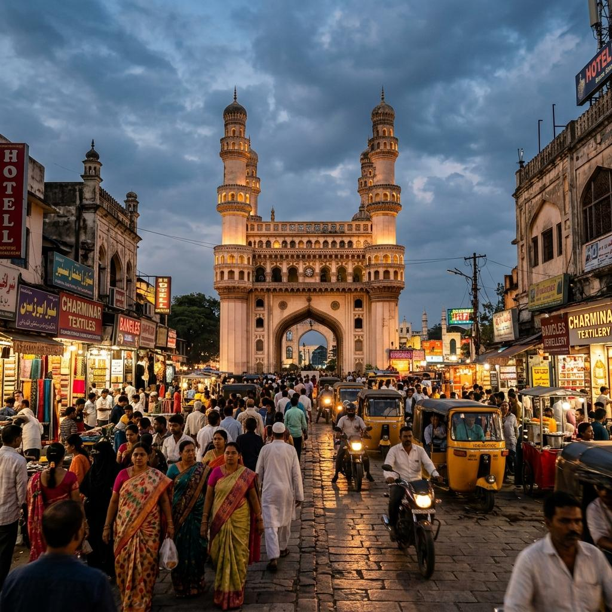
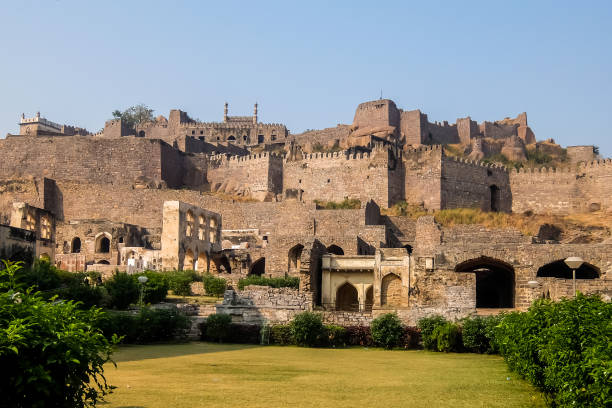
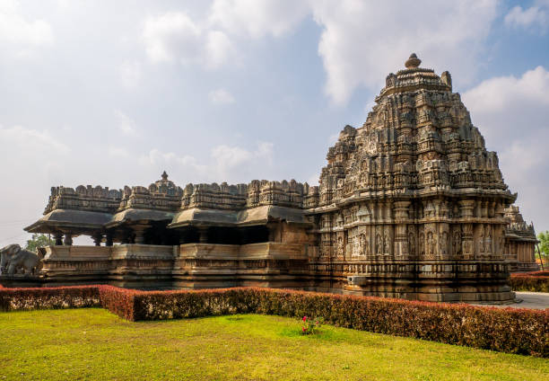
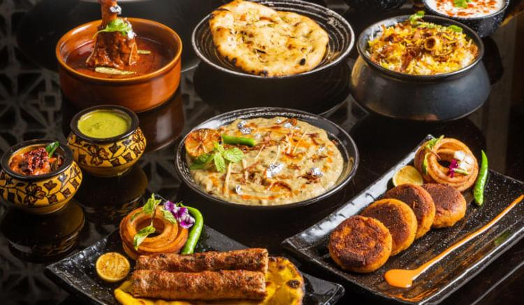

01
Hyderabad
The City of Pearls — famed for Hussain Sagar Lake, opulent Chowmahalla Palace, Hi-Tech City, and historic bazaars.

Discover royal Qutb Shahi and Nizam heritage, Kakatiya architectural marvels, dynamic tech hubs, and iconic Hyderabadi culinary traditions.
Explore Telangana ↓Telangana is a historically rich Deccan plateau state renowned for its majestic hilltop forts, pearl markets, Kakatiya dynasty stone sculptures, and vibrant cultural syncretism.
From the iconic Charminar and Golconda acoustic engineering in Hyderabad to the UNESCO-inscribed Ramappa Temple in Warangal, Telangana seamlessly bridges centuries of royal glory with modern cosmopolitan energy.
Key historical destinations and architectural landmarks of Telangana.

The City of Pearls — famed for Hussain Sagar Lake, opulent Chowmahalla Palace, Hi-Tech City, and historic bazaars.

Hyderabad's signature 16th-century monument and mosque, framed by bustling Laad Bazaar bangle markets and street food stalls.

A formidable medieval fortress renowned for its ingenious acoustic engineering, royal palaces, and historic diamond mines.

The historic Kakatiya capital featuring the Thousand Pillar Temple, intricately carved stone arches, and Ramappa Temple.
Telangana cuisine offers a unique culinary dualism — combining royal dum cooking of the Nizams with fiery, tangy, millet-based rustic Deccan preparations.

A grand floral festival celebrated by women across Telangana, creating vibrant concentric flower stacks and singing folk songs.
A colourful Hindu Thanksgiving festival honoring Goddess Mahakali with earthen pot offerings and lively rhythmic processions.
An ancient, energetic warrior dance form that originated in the Kakatiya dynasty to inspire soldiers before battle.
Silver-inlaid Bidri metalcraft, Nirmal paintings, and world-renowned Pochampally geometric Ikat silk textiles.
Discover all 28 states, local food recipes, and historic travel destinations.
← Back to All States